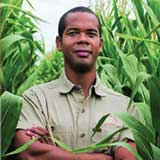

I’ve always loved technology and seeing how it can apply to almost anything. Agriculture has a unique opportunity where we can change an old industry with today’s technology.
03
More than just farming
Agriculture means many things to many people. We give you a wide lends across all aspects of the agriculture industry, so you can make a difference no matter where you take your education.
Learn More
04
Heritage
Traditions and roots run deep in agriculture. We honor agriculture’s heritage by teaching you to build a business worthy of passing down to the next generation.
Learn More